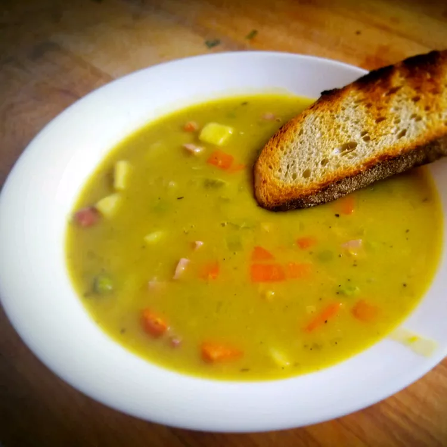

back home
Split Pea Soup

Description
There's nothing like classic split pea soup to satisfy your comfort food craving. This split pea soup recipe is complete with ham, hearty veggies, and simple seasonings.
ingredient
- Dried split peas: Find dried split peas on the dried beans and rice aisle.
- Cold water: Soak the peas for at least eight hours in cold water. You'll also need two quarts of cold water for the soup itself.
- Ham bone: A ham bone is cooked with the peas, adding a wonderfully meaty flavor.
- Vegetables: You'll need two onions, three carrots, three celery stalks, and one potato.
- Spices and seasonings: This split pea soup recipe is seasoned with salt, black pepper, and dried marjoram.
steps
- Place peas in a large stockpot and cover with several inches of cold water; let soak, 8 hours to overnight. Drain, rinse, and return peas to the pot.
- dd 2 quarts of cold water, ham bone, onion, salt, pepper, and marjoram to the stockpot. Cover, bring to a boil, and simmer for 1 1/2 hours, stirring occasionally.
- Remove ham bone; cut off meat, dice, and return meat to soup. Add celery, carrots, and potatoes. Cook slowly, uncovered, until vegetables are tender, about 30 to 40 minutes.